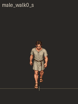
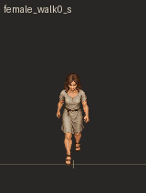
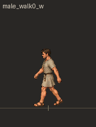
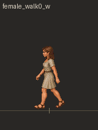
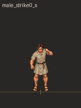

<!doctype html><meta charset="utf-8"><title>South and west motion review</title><style>body{margin:0;background:#292725;color:#ddd;display:grid;grid-template-columns:repeat(6,160px);font:12px sans-serif}figure{margin:0}img{width:160px;height:212px;image-rendering:pixelated}</style><figure><figcaption>male-s-walk</figcaption></figure><figure><figcaption>female-s-walk</figcaption></figure><figure><figcaption>male-w-walk</figcaption></figure><figure><figcaption>female-w-walk</figcaption></figure><figure><figcaption>male-s-attack</figcaption></figure><figure><figcaption>female-s-attack</figcaption></figure>